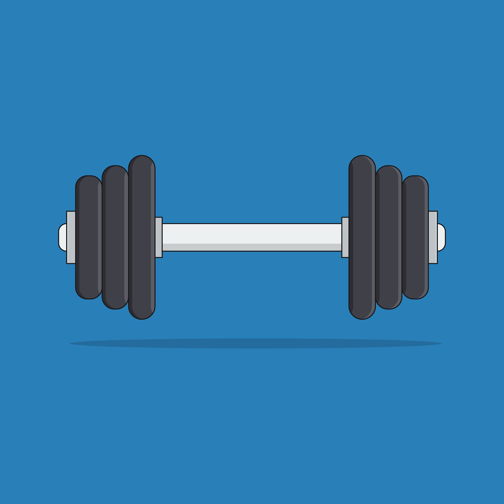
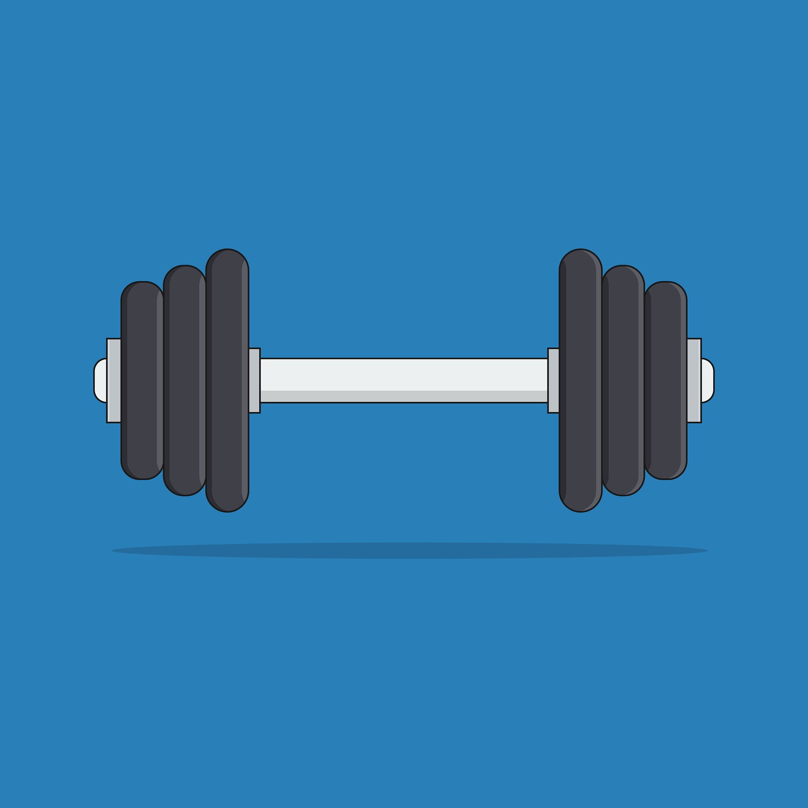
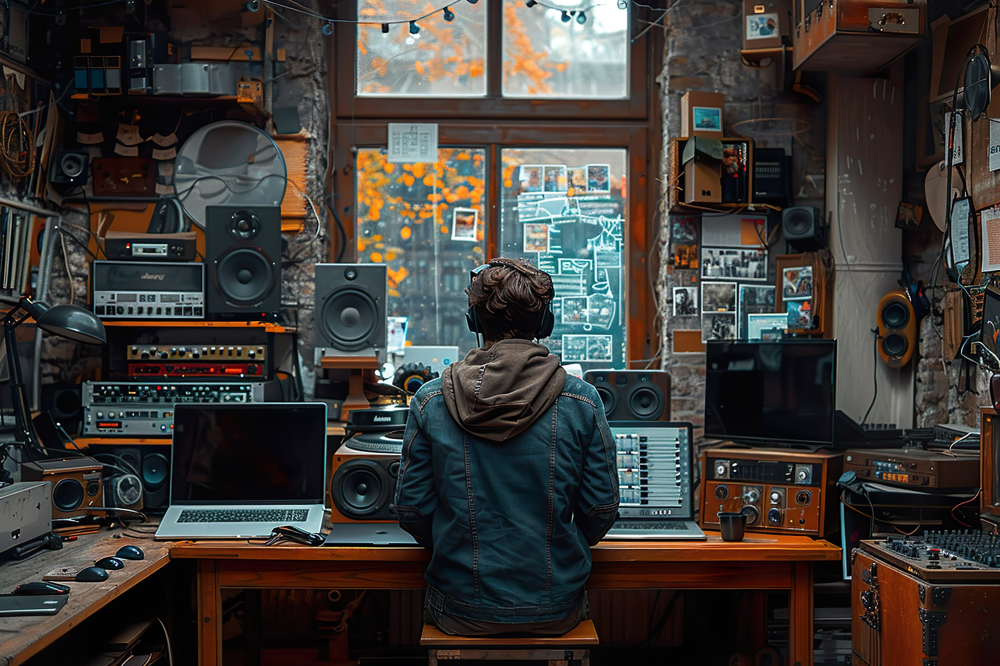
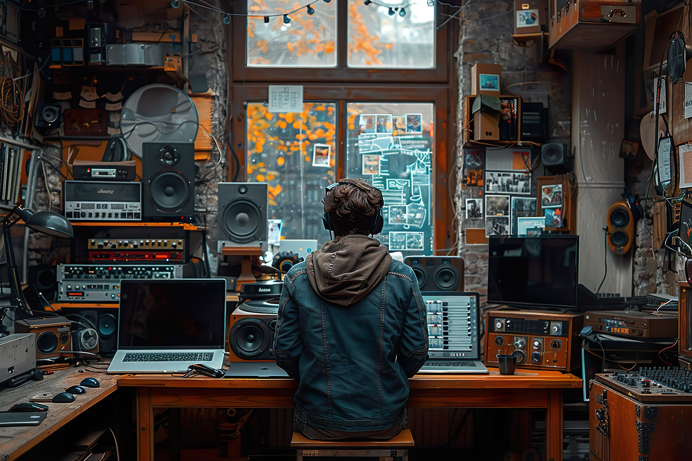
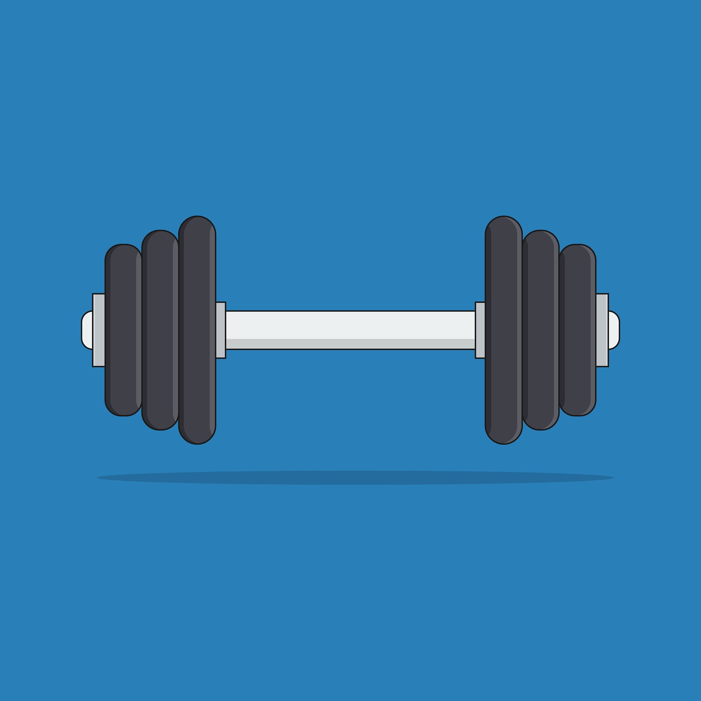
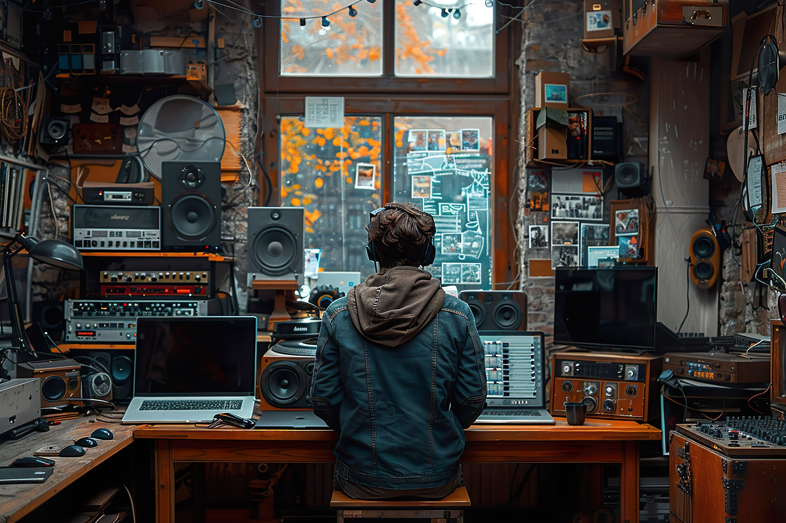

 


Sakarya Üniversitesi Bilgisayar Mühendisliği Öğrencisi
Merhaba! Ben Muhammed Can Özyaşar, Sakarya Üniversitesi Bilgisayar Mühendisliği öğrencisiyim.
Aynı
zamanda
Güzergah Robotics adlı Teknofest takımında ROS (Robot Operating System)
alanında iyileştirmeler yapıyorum.
Yazılım alanında kendimi geliştirmek için çeşitli kurslar ve
seminerlere
katılmaya özen gösteriyorum.
Teknoloji dünyasındaki yenilikleri yakından takip etmeye çalışıyorum. Yeni teknolojiler ve trendler beni heyecanlandırıyor.
Sporun sadece fiziksel sağlık için değil, aynı zamanda mental gelişim için de önemli olduğuna inanıyorum.
Film izlemek için vakit ayırmaya özen gösteriyorum, film izlemeyi seviyorum. Farklı türlerdeki filmleri keşfetmek benim için keyifli bir aktivite.
Ekonomi, beni her zaman büyüleyen karmaşık ve dinamik bir alan olmuştur.Ekonomi öğrenmeye başlamamın temel nedeni, para nasıl çalışır ve dünya ekonomisini nasıl etkiler merakımdı.Ekonomi öğrenmenin bir diğer faydası ise bana dünyaya dair daha geniş bir bakış açısı kazandırmış olmasıdır. Ekonomi, sadece para ve finansla ilgili bir alan değildir; aynı zamanda insan davranışları, siyaset ve toplum gibi diğer alanlarla da bağlantılıdır

